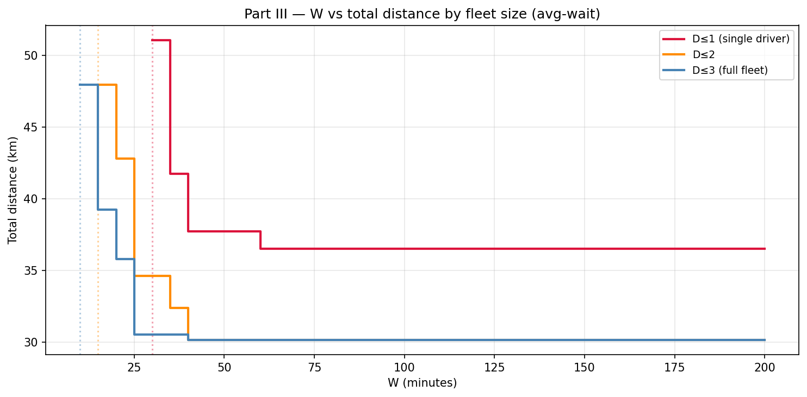
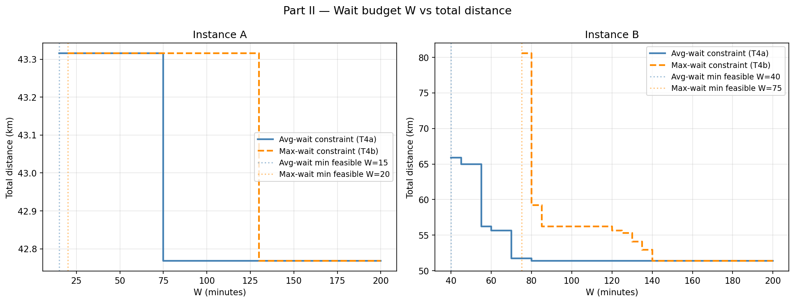

Operations Research · Consulting Case Study
Last-Mile Delivery
Optimization
Prescriptive routing and driver assignment for Uber Eats — a four-part MIP progression from single-driver routing to a real-time scalable heuristic across Toronto neighbourhoods.
Business context
The last-mile cost problem
Uber Eats, DoorDash, and SkipTheDishes collectively move billions of dollars in food orders yet have never reported a profit. The single largest controllable cost is driver distance — base fares are tied to kilometres driven, making routing efficiency the primary operational lever available to platform operators.
This project was developed as consultants for Uber Eats' data analytics group (RSM 8443, Rotman School of Management, Winter 2026). The goal: design a sequence of increasingly realistic prescriptive models that minimise total delivery distance while honouring customer service-level agreements on wait time.
Methodology
Four-part incremental model design
Each part adds one real-world dimension to the model, building toward a deployable system. This incremental approach mirrors how operations teams validate models before putting them into production.
Single-driver distance minimisation
Formulated a Travelling Salesman-style MILP for one driver starting from Downtown Toronto (Rosedale). The driver may carry multiple orders simultaneously; the model finds the sequence of restaurant pick-ups and neighbourhood drop-offs that minimises total kilometres driven.
Subtour-elimination constraints (Miller–Tucker–Zemlin style) were added to enforce a single connected route. The model was validated on two instances of increasing size.
Wait-budget SLA enforcement
Added a time dimension: each restaurant has a food-release timestamp, and customer wait time is defined as the gap between food being ready and the driver arriving at the customer's door. A Big-M formulation linearises the conditional arrival-time constraints, with a parameter W capping the maximum average wait across all orders.
Tested both an average-wait constraint (T4a) and a stricter max-wait constraint (T4b), comparing their effect on solution distance and feasibility. The max-wait formulation is a strict subset of avg-wait, requiring a wider W to find feasible solutions but protecting individual customers from extreme delays.
Joint order assignment & routing
Generalised the Part II model to multiple drivers with heterogeneous speeds and starting locations. The MILP now simultaneously assigns orders to drivers and routes each driver — the core decision problem Uber Eats solves in practice.
A W × D sweep (driver cap × wait budget) over 90 problem instances revealed the precise trade-off surface: more drivers reduce distance but increase operational cost, while tighter W forces longer routes to rearrange delivery sequences.
Cluster-then-route real-time heuristic
MILPs don't scale: the 15-order large instance is intractable for exact solvers within operational time windows. The cluster-then-route heuristic decomposes the problem in three phases: (1) geographically cluster orders, (2) assign clusters to drivers, (3) solve a small per-driver routing MILP with an optional max-wait repair pass.
Benchmarked against the Part III MILP optimal on the small instance, then applied to the large instance. Designed to run online — it only uses orders currently in the system, matching how Uber Eats actually operates.
Route visualizations · Interactive maps
Optimal routes across Toronto
Each map is the actual solver output rendered over real Toronto neighbourhood centroids. Hover any marker for arrival time and wait details. Use the tabs to compare single-driver vs. multi-driver solutions.
Analysis · Trade-off curves
Distance vs. service level
These charts answer a core managerial question: how much does it cost to serve customers faster? The step-function shape reveals that distance is not continuously sensitive to W — there are discrete routing changes where a tighter budget forces a fundamentally different sequence.


Summary results
Key outcomes across all parts
| Part | Instance | Configuration | Distance | Avg wait | Method |
|---|---|---|---|---|---|
| I | A | 1 driver · 2 orders | 4.71 km | — | MILP |
| I | B | 1 driver · 5 orders | 33.91 km | — | MILP |
| II | A | 1 driver · W=60 min | 43.32 km | 12.3 min | MILP |
| II | B | 1 driver · W=60 min | 55.63 km | 58.4 min | MILP |
| III | Small | D≤3 · W=60 min · 2 deployed | 30.18 km | <60 min | MILP |
| IV | Small | D≤3 · W=120 min · heuristic | 41.22 km | — | Heuristic (+36.6%) |
| IV | Large | 10 drivers · W=120 min · 7 deployed | 83.90 km | — | Heuristic · 1.1 ms |
Managerial insights
What this tells operations teams
Skills demonstrated
This project spans the full analytics-to-deployment arc for an operations research problem.